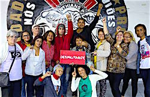

Friends,
I am delighted to announce the 2016 Fellowship of Reconciliation Peace Awards winners!
I want to personally thank everyone who took the time to nominate so many worthy candidates this year.
Local Hero Award
The Local Hero Award celebrates an individual or organization working to promote peace and justice within their own local community anywhere in the United States. The 2016 Local Hero Award goes to the Right Reverend Doctor John Selders, Jr. and his wife Pamela Selders for their leadership of Moral Monday Connecticut.
Based in Hartford, Conn., and affiliated with the Black Lives Matter movement, Moral Monday CT has led numerous public actions to seek justice on voting rights and registration in the state. They also work on ending police brutality against black people; seeking full employment, quality housing and education; and ending unjust criminalization and incarceration policies.
Rev. Dr. Selders is an ordained minister in the United Church of Christ, and Organizing Pastor of Amistad United Church of Christ in Hartford. Pamela Selders is a healer, entrepreneur, and activist who mentors and develops youth leadership. Her indomitable spirit is the core of Moral Monday CT. Both Selders hail from Ferguson, Missouri.
To learn more, visit the Moral Monday CT website and the Moral Monday CT Facebook page.
Martin Luther King Jr. Award
The Martin Luther King Jr. Award recognizes those working in the United States to further the Rev. Dr. King's nonviolent approach to transforming racial, social, and economic injustice. The 2016 MLK Award goes to Kazu Haga and the East Point Peace Academy, in Oakland, California.
Born in Japan, Haga is known for leading inspirational Kingian nonviolence workshops, both in Oakland and through webinars which enable global reach.
Haga became a Kingian nonviolence trainer in 2009, and in 2013, became founder and coordinator of the East Point Peace Academy, and later, co-founder and board chair of Communities United for Restorative Youth Justice. "Through training and education, East Point transforms the hearts and minds of individuals, connecting them to a broader history of nonviolent social change movements, and inspiring them to become advocates for transforming the policies, cultures and value systems of their communities," Haga writes.
To learn more, visit the East Point Peace Academy website and the East Point Peace Academy Facebook page.
International Pfeffer Peace Award
The International Pfeffer Peace Award honors those around the world working for peace and justice. The 2016 Pfeffer Peace Award goes to the Mothers of May (Mães de Maio) in São Paulo, Brazil, for their perseverance in seeking justice for their murdered sons.
During a ten day period in May 2006 known as "Bloody Week," a staggering 564 people were murdered -- hundreds of whom were shot in cold-blooded, close-range executions -- during a drug war. Many believe that on- and off-duty police officers committed these murders in retaliation for drug gang murders. There have been no investigations or arrests in any of these cases in the ten years since.
Débora Maria da Silva lost her son that week, and went on to organize the Mothers of May as a social movement to seek truth and justice for the dead through public actions, calling for police and government accountability.
To learn more, read an article on the group in English, or visit the Mothers of May website and the Mothers of May Facebook page, both in Portuguese.
Join us for the FOR Peace Awards presentation!
This year, we are excited to present our Peace Awards at FOR's "Persevering FOR Peace" Centennial Conference in Seabeck, WA.
In addition to the awards ceremony and many wonderful workshops happening July 1-4, the keynote speakers at the conference will be Erica Chenoweth and Jamila Raqib, two of the world's foremost researchers in the use of nonviolence to overthrow despotic regimes.
Additionally, this year we'll be emphasizing leadership cultivation and supporting the next generation of nonviolent social justice activists. To that end, FOR-USA and FOR Oregon provided scholarship funding for youth and young adults, and we'll be organizing a special youth track at the conference.
Learn more and register for the conference.
In peace and celebration,
 Meredith Nicolich Meredith Nicolich
Peace Awards Coordinator
Fellowship of Reconciliation
|